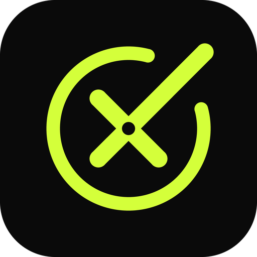

CRONYXPolítica de privacidad
Vigente desde el 24 de noviembre de 2026
Qué es Cronyx
Cronyx es una herramienta de uso personal. La usa únicamente su dueño, el creador detrás de las marcas Mogameson y El Bestiario Real, para programar y publicar sus propios videos en sus propias cuentas de Facebook, Instagram, YouTube y TikTok. No tiene usuarios externos y no ofrece registro al público.
Qué datos usa
- Los identificadores y nombres de las páginas de Facebook, cuentas de Instagram, canales de YouTube y cuentas de TikTok del dueño.
- Los permisos de acceso (tokens) que esas plataformas entregan para publicar en esas cuentas.
- Los videos, portadas, textos y horarios que el dueño prepara para publicar.
- El identificador y el enlace de cada publicación hecha, para saber si salió bien.
Cronyx no recoge datos de seguidores, de personas que comentan ni de ningún otro usuario de las redes.
Dónde se guardan
Todo se guarda en el computador del dueño. Cronyx no tiene servidores propios en internet ni bases de datos en la nube.
Con quién se comparten
Los datos solo se envían a la plataforma donde se publica cada video (Meta, Google/YouTube o TikTok), y solo para hacer esa publicación. No se venden, no se alquilan y no se comparten con nadie más, ni se usan para publicidad.
YouTube y Google
Cronyx usa los servicios de la API de YouTube. Al usarlo se aplican las Condiciones del servicio de YouTube y la Política de privacidad de Google. El acceso de Cronyx a una cuenta de Google se puede quitar en cualquier momento desde la página de permisos de tu cuenta de Google.
Cuánto tiempo se guardan
Los permisos de acceso se guardan mientras la cuenta siga conectada. El historial de publicaciones se guarda mientras el dueño lo necesite y se puede borrar en cualquier momento.
Cómo borrar los datos
Mira las instrucciones en Eliminar tus datos.
Contacto
Para cualquier pregunta sobre esta política, deja un mensaje en github.com/Maikozort/cronyx/issues.
In English
Cronyx is a personal tool used only by its owner to schedule and publish videos to the owner's own Facebook Pages, Instagram, YouTube and TikTok accounts. It stores account IDs, access tokens and post records only on the owner's computer, sends data only to the platform where each video is published, and never sells or shares data with anyone else. YouTube API Services are used subject to the YouTube Terms of Service and the Google Privacy Policy; access can be revoked at myaccount.google.com/permissions.